Module 3 — Industrial Graphics | Pages 237-258
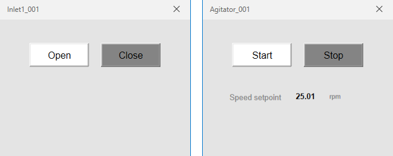
Lab 7 – Creating a Custom Symbol
Lab 7 – Creating a Custom Symbol
Introduction
In this lab, you will create a custom symbol to be used as a common command panel for opening
and closing valves and starting and stopping pumps and agitators, as well as changing the speed
setpoint for an agitator.
You will create and configure custom properties, as well as add button elements to the symbol.
You will configure the button elements with Pushbutton, Element Style, and Value Display
animations using custom properties.
You will also add Show Symbol animations for the Agitator, Pump, and Valve symbols to be able to
show their command panels when they are clicked in runtime.
When testing your ViewApp, you will use the command panels to perform operations on the
equipment.
Objectives
Upon completion of this lab, you will be able to:
Create and configure custom properties in a symbol
Add Button elements and configure Pushbutton animations
Use Element Style Animations
Use Show Symbol animations
Configure the FaceplateMode property for a symbol
Configure the TreatAsIcon property for embedded symbols
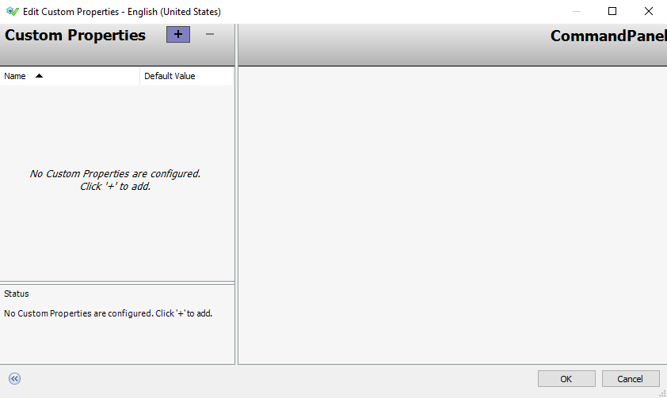
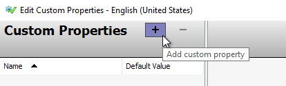
Create a Command Panel Symbol
In the following steps, you will create a CommandPanel symbol and create and configure custom
properties for it. You will also add and configure buttons for the symbol.
1.
On the Graphics tab, in the Training \ Symbols toolset, create a symbol and rename it to
CommandPanel.
2.
Double-click CommandPanel to open it in the Graphic Editor.
3.
Right-click the drawing canvas and select Custom Properties.
The Edit Custom Properties dialog box appears.
4.
Click Add custom property to add a new custom property.
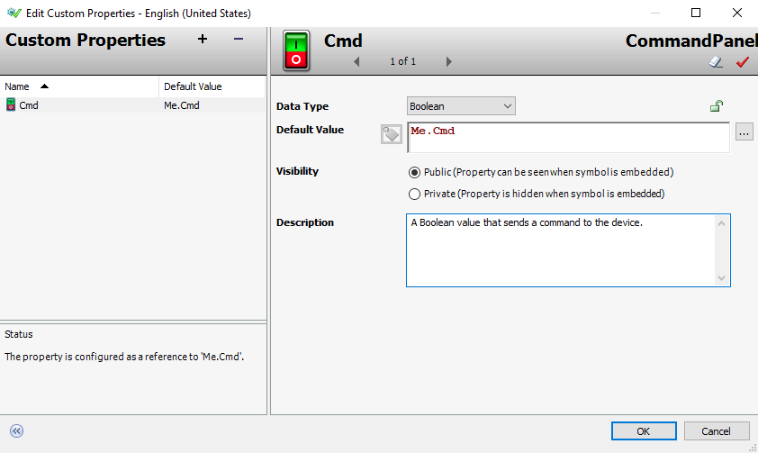
Lab 7 – Creating a Custom Symbol
5.
Name the new custom property Cmd and press Enter.
6.
For Data Type, leave the data type as Boolean.
7.
In Default Value, delete False and enter Me.Cmd.
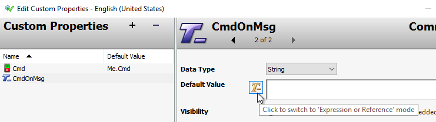
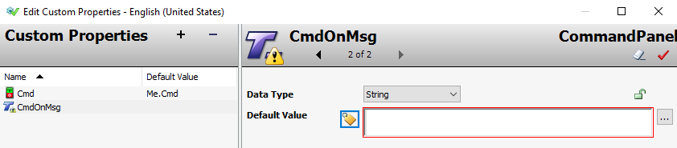
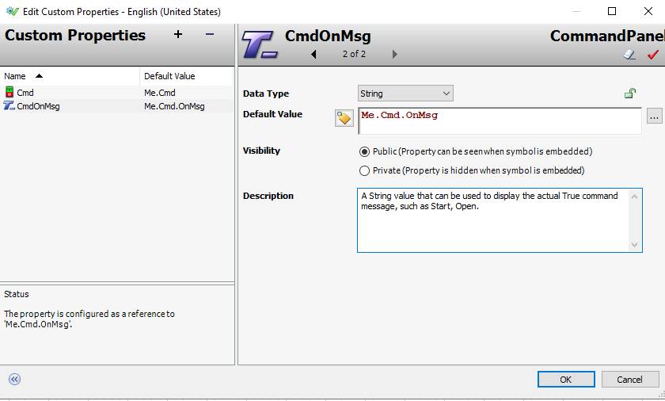
9.
Add another new custom property and name it CmdOnMsg.
10. For Data Type, select String.
11. Click the icon to the left of the Default Value field, to switch to Expression or Reference
mode.
The icon changes as shown below and the Default Value field appears with a red outline.
12. In Default Value, enter the following:
Me.Cmd.OnMsg
13. In Description, enter the following:
A String value that can be used to display the actual True command message,
such as Start, Open.
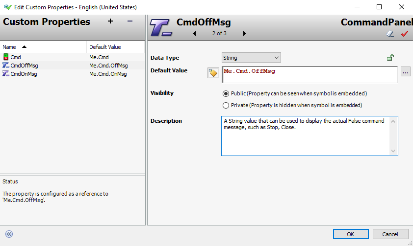
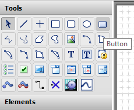
Lab 7 – Creating a Custom Symbol
14. Add another custom property and name it CmdOffMsg.
15. For Data Type, select String.
16. Click the icon to the left of the Default Value field to switch to Expression or Reference
mode.
17. In Default Value, enter the following:
Me.Cmd.OffMsg
18. In Description, enter the following:
A String value that can be used to display the actual False command message,
such as Stop, Close.
19. Click OK to close the Edit Custom Properties dialog box.
20. In the Tools pane, select the Button tool.
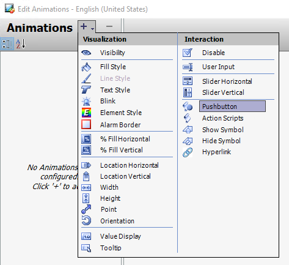
21. Draw a button on the drawing canvas, and enter Open for the text.
The name assigned to the button is Button1. It should look similar to the following.
In this example, the Appearance \ Width property for Button1 is 100 pixels and the
Appearance \ Height property is 40 pixels.
22. On the drawing canvas, double-click Button1 to add animations.
The Edit Animations dialog box appears.
23. Click Add Animation to add a new animation to Button1.
24. In the list of animations, select Pushbutton.
The Pushbutton animation is added.
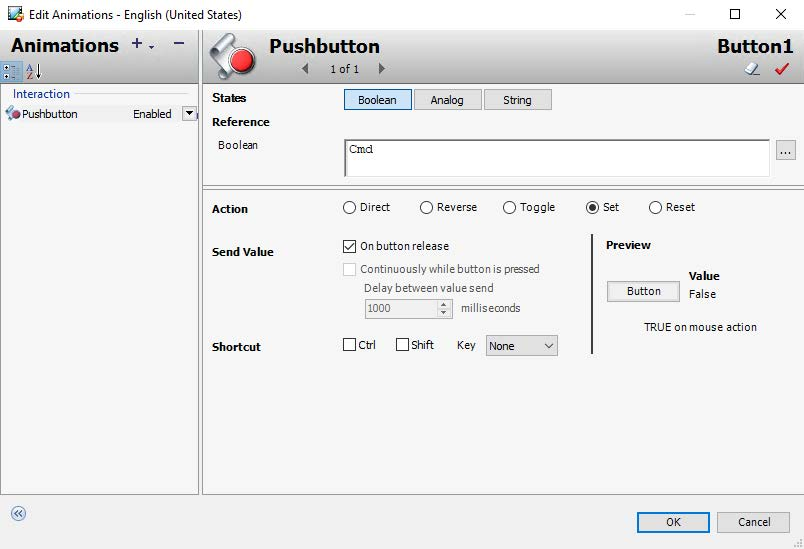
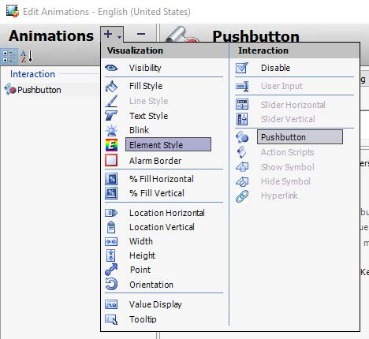
Lab 7 – Creating a Custom Symbol
25. Configure the Pushbutton animation as follows:
26. Add another animation and select Element Style.
States:
Boolean
Reference (Boolean):
Cmd
Action:
Set
Send Value:
On button release checked
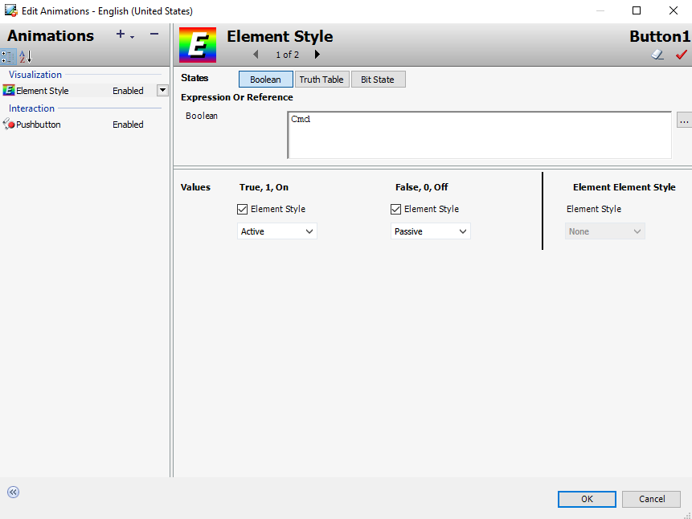
27. Configure the Element Style animation as follows:
States:
Boolean
Expression Or Reference (Boolean):
Cmd
Values \ True, 1, On:
Element Style checked (default)
Active selected
Values \ False, 0, Off:
Element Style checked (default)
Passive selected
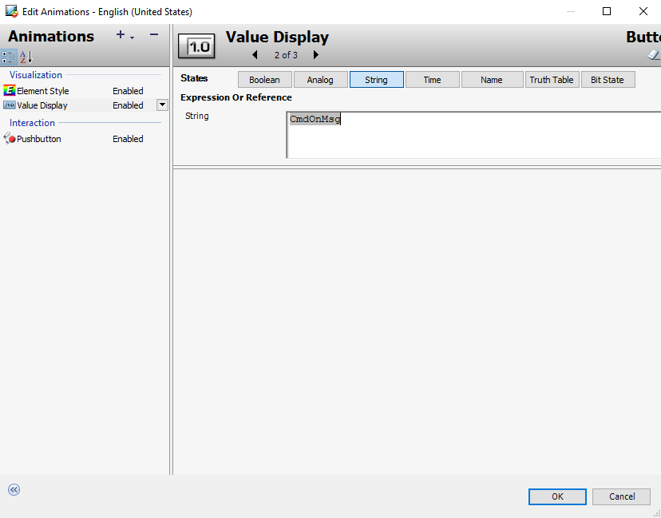
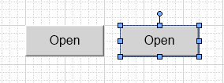
Lab 7 – Creating a Custom Symbol
28. Add another animation and select Value Display.
29. Configure the Value Display animation as follows:
30. Click OK to close the Edit Animations dialog box.
31. On the drawing canvas, right-click Button1 and select Duplicate.
The Button1 symbol is duplicated. The name of the duplicate symbol is Button2.
32. Ensure Button2 is selected and move it to the right side of Button1.
The buttons should look similar to the following.
States:
String
Expression or Reference (String):
CmdOnMsg
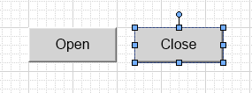
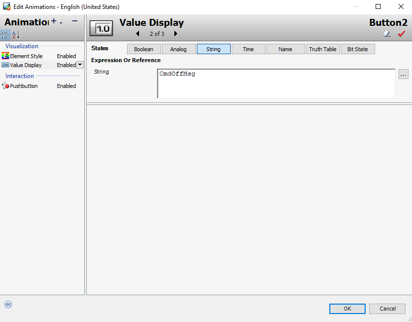
33. On the Properties tab for Button2, modify the Appearance \ Text property to Close.
The text on Button2 changes as follows:
34. Double-click Button2 to edit the animations.
The Edit Animations dialog box appears.
35. For the Value Display animation, change Expression Or Reference (String) to CmdOffMsg.
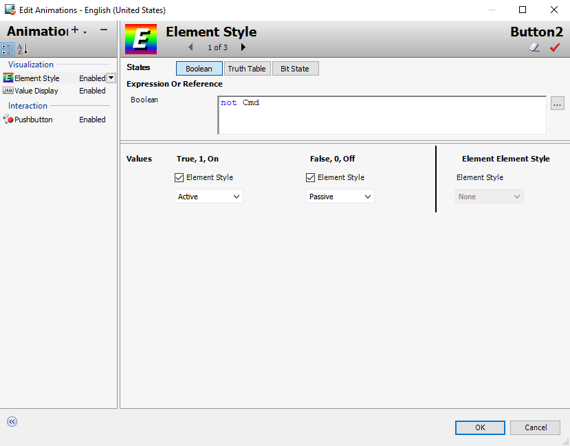
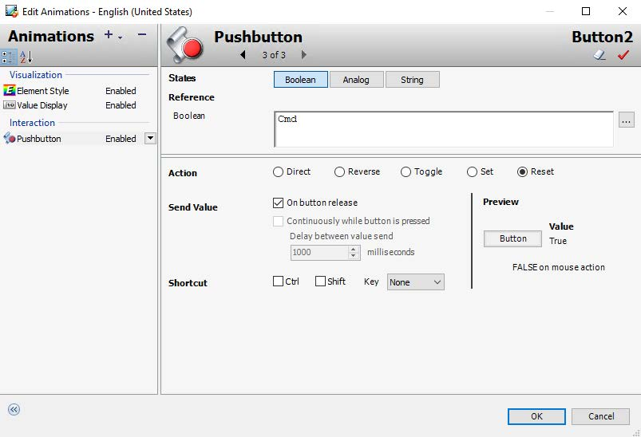
Lab 7 – Creating a Custom Symbol
36. For the Element Style animation, change Expression Or Reference (Boolean) to not Cmd.
37. For the Pushbutton animation, change Action to Reset.
38. Click OK to close the Edit Animations dialog box.
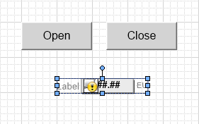
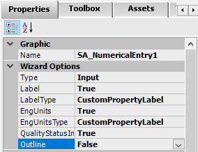
Add Display for Speed Setpoint
Now you will add a numerical symbol to the CommandPanel symbol, for displaying and changing
the speed setpoint.
39. On the Toolbox tab, enter a search string to find SA_NumericalEntry.
40. From the Toolbox tab preview area, drag SA_NumericalEntry to the drawing canvas and
place it below the buttons.
The elements on the canvas should look similar to the following:
41. With SA_NumericalEntry1 selected, on the Properties tab, configure properties as follows:
Wizard Options \ LabelType:
CustomPropertyLabel
Wizard Options \ EngUnitsType:
CustomPropertyLabel
Wizard Options \ Outline:
False
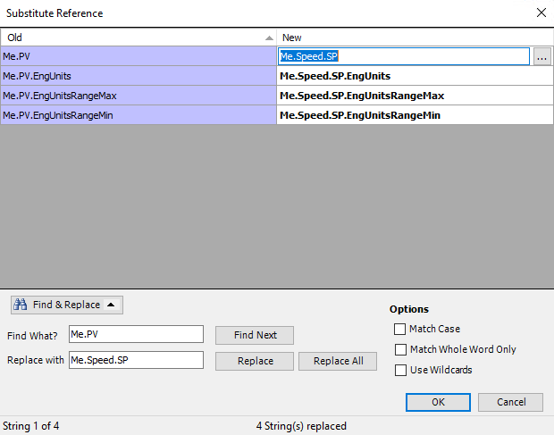
Lab 7 – Creating a Custom Symbol
42. Right-click SA_NumericalEntry1 and select Substitute | Substitute References.
43. Use Find & Replace to replace all occurrences of the following:
Important: Be sure to click Replace All to replace all of the references.When you are
finished, ensure that the references in the New column are as shown below.
44. Click OK to close the Substitute Reference dialog box.
Find What?:
Me.PV
Replace with:
Me.Speed.SP
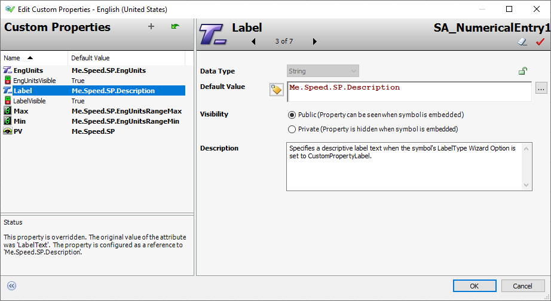
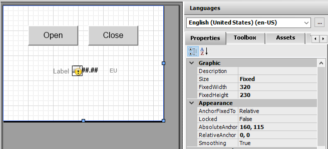
45. Right-click SA_NumericalEntry1 and select Custom Properties.
46. Select Label from the Custom Properties list.
47. For Default Value, switch to Expression or Reference mode and enter
Me.Speed.SP.Description.
48. Click OK to close the Edit Custom Properties dialog box.
49. Click the drawing canvas.
50. On the Properties tab, change the Graphic \ Size property to Fixed.
51. Resize the canvas to smaller, but make sure all visual elements are included on the canvas.
Your canvas should look similar to the following:
In this example, the Graphic \ FixedWidth property for the symbol is 320 pixels and the
Graphic \ FixedHeight property is 230 pixels.
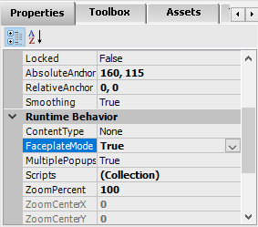
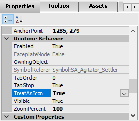
Lab 7 – Creating a Custom Symbol
52. On the Properties tab, set the Runtime Behavior \ FaceplateMode property to True.
This will hide the embedded SA_NumericalEntry symbol at runtime when the
CommandPanel symbol is used for objects that do not have setpoint attributes.
53. Save and close the CommandPanel symbol, and check it in.
Configure Show Symbol Animations
In the following steps, you will configure Show Symbol animations for the Pump_Detailed,
Agitator_Detailed, and Valve_Detailed symbols. You will configure the animation for one symbol,
and then copy the animation configuration to the other two symbols.
54. On the Graphics tab, in the Training \ Symbols toolset, double-click Agitator_Detailed to
open it in the Graphic Editor.
55. Select the SA_Agitator_Settler1 symbol on the drawing canvas, and on the Properties tab,
change the Runtime Behavior \ TreatAsIcon property to True.
56. Double-click the symbol and add a Show Symbol animation.
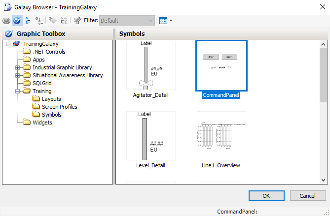
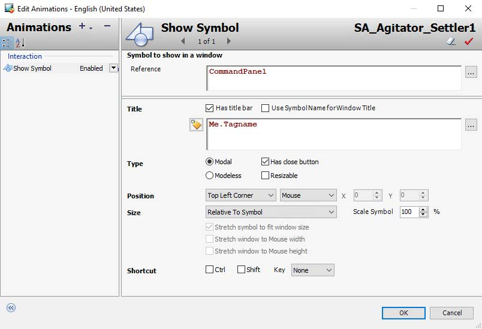
57. For Reference, use the Galaxy Browser to browse Graphic Toolbox \ Training \ Symbols
and select CommandPanel.
58. Click OK to close the Galaxy Browser.
59. For Title, uncheck Use Symbol Name for Window Title.
60. For Title, switch to Expression or Reference mode, and enter Me.Tagname.
61. For Position, select Top Left Corner, and then select Mouse.
62. Click OK to close the Edit Animations dialog box.
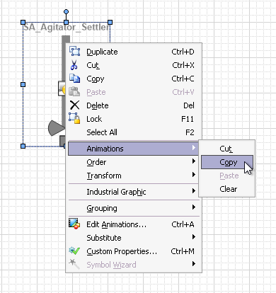
Lab 7 – Creating a Custom Symbol
63. Right-click the SA_Agitator_Settler1 symbol on the drawing canvas, and select
Animations | Copy.
64. Save and close the Agitator_Detailed symbol, and check it in.
65. On the Graphics tab, in the Training \ Symbols toolset, double-click Pump_Detailed to
open it in the Graphic Editor.
66. Select the SA_Pump_Blower_RotaryValve1 symbol on the drawing canvas, and on the
Properties tab, change the Runtime Behavior \ TreatAsIcon property to True.
67. Right-click the symbol, and select Animations | Paste.
68. Save and close the Pump_Detailed symbol, and check it in.
69. On the Graphics tab, in the Training \ Symbols toolset, double-click Valve_Detailed to
open it in the Graphic Editor.
70. Select the SA_Valve_And_Damper1 symbol on the drawing canvas, and on the Properties
tab, change the Runtime Behavior \ TreatAsIcon property to True.
71. Right-click the symbol, and select Animations | Paste.
72. Save and close the Valve_Detailed symbol, and check it in.
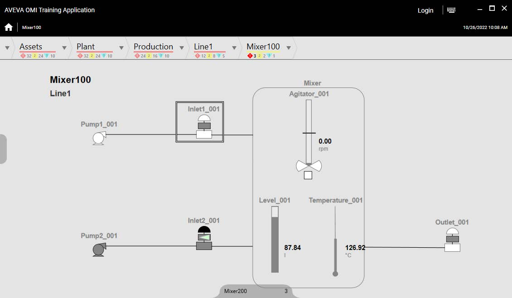
Test the ViewApp in a Preview Session
Now you will review the ViewApp changes in the preview session. You will click on symbols in the
ViewApp display to show the command panels for the symbols. The title and buttons on the
command panels will be different depending on which symbol was clicked. The colors of the
buttons will change based on the Element Style animation configuration, and the speed setpoint
will only appear on the command panel for the agitator.
73. Switch to the ViewApp preview session.
74. Navigate to Mixer100.
75. On the ViewApp display, click the Inlet1_001 symbol to view its command panel.
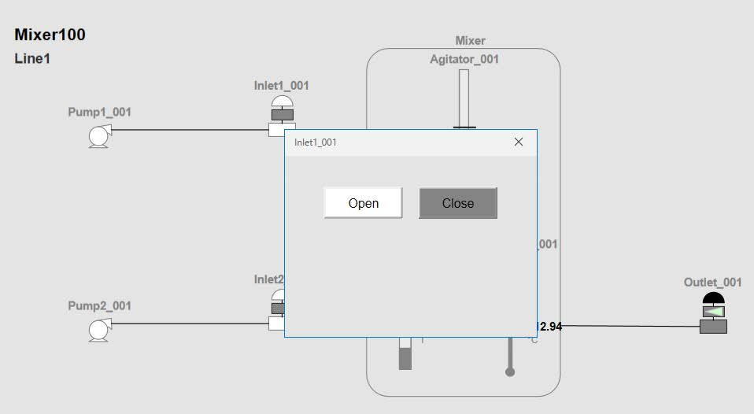
Lab 7 – Creating a Custom Symbol
Notice that the command panel appears with its top-left corner at the position where you
clicked your mouse. The title for the panel is Inlet_001 and the text on the buttons is Open
and Close.
The setpoint graphic is not available because valve objects do not have the speed setpoint
attribute. The FaceplateMode property for the CommandPanel symbol is set to True, so
graphic elements for the setpoint entry symbol are hidden.
Also notice that the Element Style animation applied to the buttons causes their visual
characteristics to change, based on whether the valve is open or closed. The following
example shows the buttons when the valve is closed.
76. On the command panel, click Open and then click Close to operate the valve.
77. Click the X at the top of the command panel for Inlet1_001 to close it.
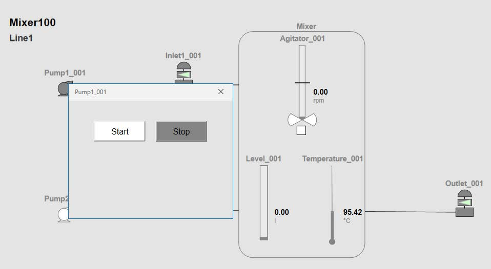
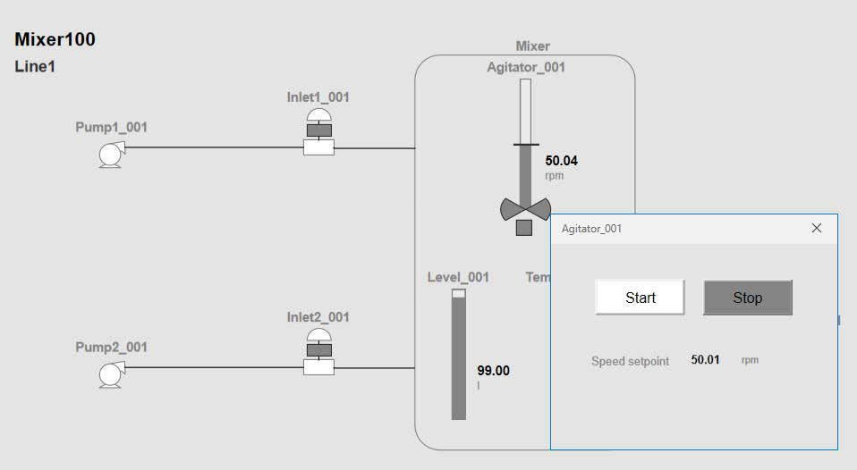
78. On the ViewApp display, click the Pump1_001 symbol to view its command panel.
The command panel appears with its top-left corner at the position where you clicked your
mouse. The title for the panel is Pump1_001 and the text on the buttons is Start and Stop.
There are no speed setpoint graphics, and the visual characteristics of the buttons change
based on whether the pump is started or stopped.
79. Close the command panel for Pump1_001.
Important: To ensure automatic operation of the simulator, click Start or Stop to ensure the
pumps are in the same state as their associated valves, so that the level in the tank begins
moving again. For example, if Inlet 1 is active, then Pump 1 must also be active (started).
80. On the ViewApp display, click the Agitator_001 symbol to view its command panel.
The command panel appears with its top-left corner at the position where you clicked your
mouse. The title on the command panel displays as Agitator_001 and the text on the buttons
is Start and Stop. The Speed setpoint entry symbol displays, and the buttons change based
on whether the agitator is started or stopped.
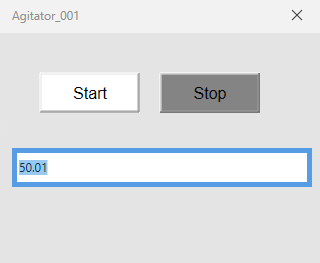
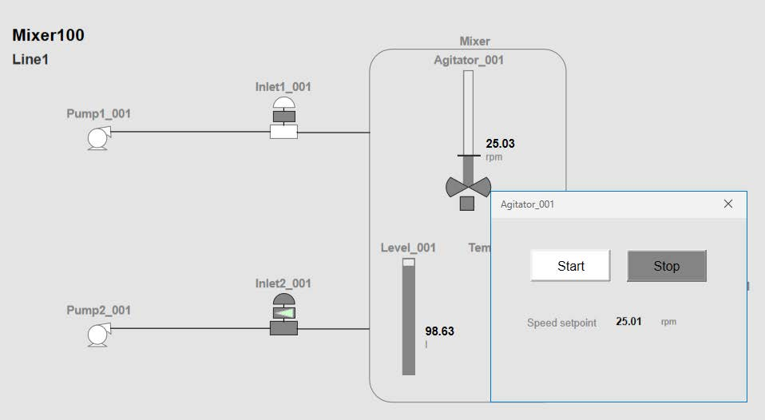
Lab 7 – Creating a Custom Symbol
In the following steps, you will change the Speed setpoint to a different value. The setpoint will
apply when the Agitator is running.
81. On the Agitator_001 command panel, click Speed setpoint.
The field becomes editable.
82. Enter 25 as the speed setpoint value and press ENTER.
The speed setpoint is now set to 25. The setpoint value may include a fractional part due to IO
scaling settings.
Notice that the speed setpoint changes on the command panel, and also on the Agitator_001
symbol.
83. Close the command panel for Agitator_001.
84. Review the results of your testing in the preview session and think about the factors that
affected the display of the command panel at runtime:
Which configurations determined the text on the buttons?
___________________________________________________________________
Why did the visual characteristics of the buttons change in runtime?
___________________________________________________________________
Why did the speed setpoint graphic appear on the command panel for the agitator, but
not for the pump or the inlet?
___________________________________________________________________
85. When you are finished testing, minimize the preview session.
Review the lab steps above and list the main configuration actions you completed.
Consider the dependencies between steps and how skipping one might affect the outcome.